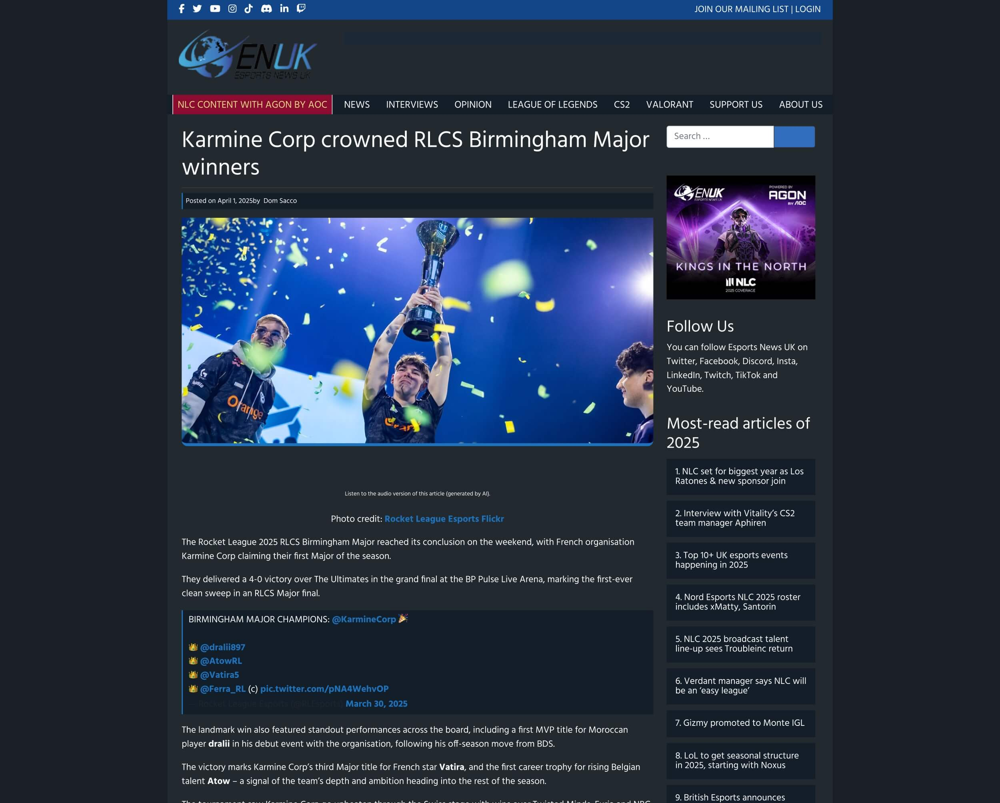
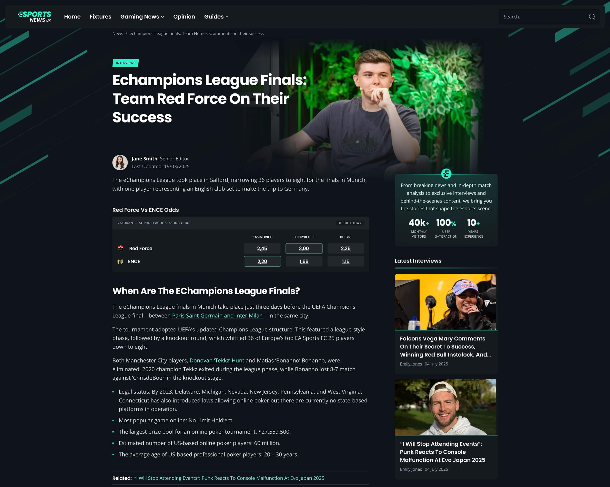

Esports Odds Comparison Platform
Esports News is an esports platform with live fixtures, news and odds comparison. This project was part of a wider redesign of the site. My focus was the core journey, from browsing fixtures to comparing odds, designing clearer, more scannable layouts for dense data, and building the design system that keeps them consistent and quick to extend.
![[image showing side-by-side desktop view of the original news site vs. the new dual-purpose platform featuring live odds integration, news feeds, and comparison modules]](images/esports/hero.jpg)
Product Designer
Figma, Token Studio, Storybook, React
8 Weeks

The Challenge
Readers follow tournaments, check fixtures, compare odds across bookmakers and click through to place bets, all from one place. The redesign expanded the product from a news-only site into this full platform, and I built the design system to support that shift.
The business model changed with it. The old site earned revenue from advertising, while the new platform earns from match odds and bookmaker referrals. That made odds and betting links the core of the product, so the system had to make them clear, trustworthy and easy to use.

Original Article

News Article
- No components for odds or fixtures. Match cards, odds cells and markets didn't exist, so every new feature meant building from scratch.
- Accessibility issues. Low-contrast text on dark layouts or over images failed WCAG.
- Inconsistent layouts. Page templates varied across the site, with no shared structure for content.
- A dated look for the sector. The redesign moved to a modern, dark-first interface that suits the sector and builds trust with bettors.
![[image showing detailed UI breakdown of a match center page with tabbed odds comparison tables]](images/esports/image-06.jpg)
Match Center & Odds Comparison
![[image showing contextual odds widget embedded within an editorial preview article]](images/esports/image-07.jpg)
Contextual Match Odds when relevent
![[image showing contextual odds widget embedded within an editorial preview article]](images/esports/image-011.jpg)
Match Center
Token Structure
- Global tokens: Raw values with no meaning attached: teal-500, a 4px base unit with an 8px rhythm, and the typography scale.
- Semantic tokens: Assign meaning to global values, e.g. bg-surface-primary → charcoal-900
![[image showing component library with dark mode tokens, odds comparison tables, live score badges, and typography scales]](images/esports/image-02.jpg)
![[image showing component library with dark mode tokens, odds comparison tables, live score badges, and typography scales]](images/esports/image-03.jpg)
Components never reference raw values, so a brand or accessibility change, like adjusting a grey to pass contrast, is made once and flows through every component.
![[image showing component library with dark mode tokens, odds comparison tables, live score badges, and typography scales]](images/esports/image-05.jpg)
Spacing & Sizing
Everything snaps to a 4px base unit. Dense elements like odds cells, badges and icon padding use 4px steps, while layout spacing and card padding sit on an 8px rhythm. Icons (16/20/24) and tap targets (40/48) follow the same scale.
![[image showing component library with dark mode tokens, odds comparison tables, live score badges, and typography scales]](images/esports/image-04.jpg)
Component System
![[image showing component library with dark mode tokens, odds comparison tables, live score badges, and typography scales]](images/esports/image-012.jpg)
- News meets odds: One odds module that sits inside articles, so users can move from reading to comparing without leaving the page.
- Built from nested components: Icons, labels, logos and badges are built once as atoms and nested inside larger components. The odds cell sits inside the match card, which sits inside the fixtures list and article modules, so one update reaches every instance.
- Odds comparison: A reusable match card, odds cell and collapsible market accordions. A highlighted "best price" state lets users spot the top odds at a glance, and accordions keep dense match pages scannable.
- Live coverage hubs: Modular scorecards and tournament brackets built with auto-layout.
- Responsible gambling built in: A persistent footer with 18+, GambleAware and GamCare, plus a reusable odds disclaimer, so compliance is never forgotten on new pages.
Results & Impact
- Estimated 60% faster delivery: Prototype-to-dev handoff sometimes dropped from 5 days to 2 days per feature, so new tournament hubs and markets ship faster.
- WCAG AA contrast across core article templates, with zero failures in testing.
- One consistent platform experience for a site built to serve 50k+ monthly readers.